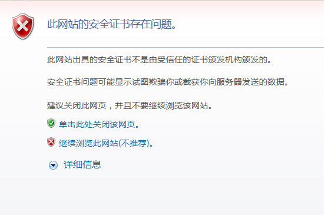
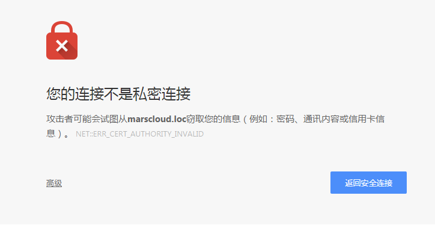
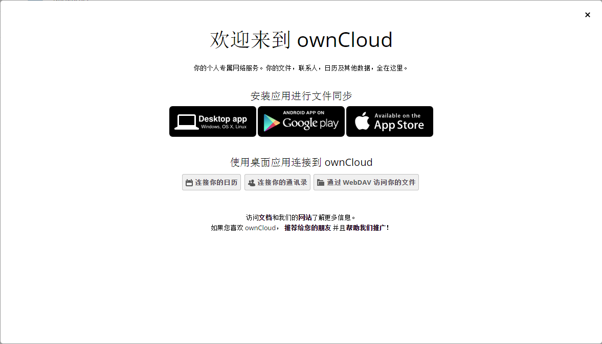
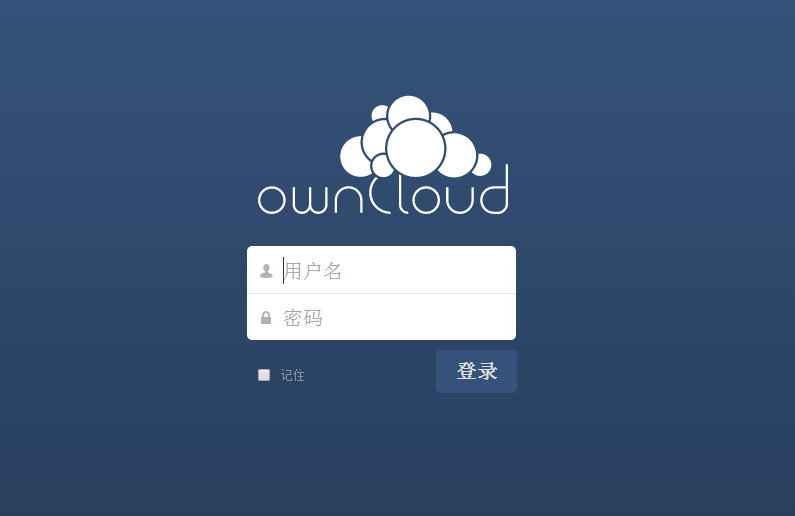
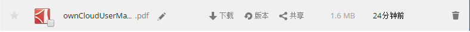
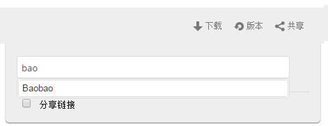
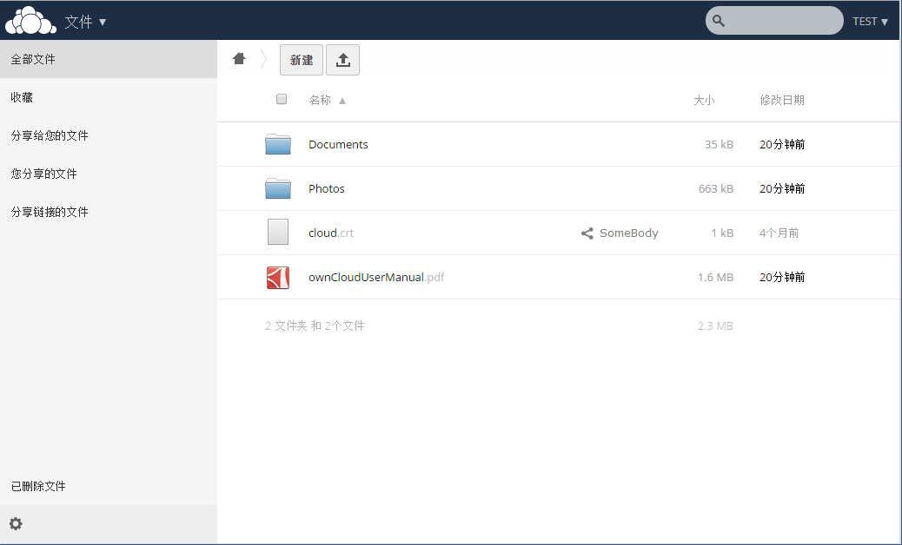

Mars Cloud
Please download the proper application served on the navigation bar or forward to Web version to download them yourself.
Modify Hosts File Tool for Windows Tool for OS X Tool for Linux
-
Find your hosts file.
Unix
/etc/hosts
OS X
/etc/hosts
Windows
C:\Windows\system32\drivers\etc\hosts
-
You need to gain the permission of admin before you proceed
Modify it.
Add an entry as
192.168.10.207 marscloud.loc - After clicking the button. You will need to go back here to continue. Go and check it!
Change DNS Server
Sorry we are still working on it!
Issue dealing on first-opening of the ownCloud
-
This problem is caused by an unauthorised certificate written by ourself.
-
Internet Explorer
Click "单击此处关闭该网页"
- Go and check Again!
Google Chrome
Click "高级" and then click "继续前往marscloud.loc（不安全)"
Login your ownCloud
-
Welcome Page
ownCloud is only available on the LAN in our lab. If you login for the first time, you can click to download clients.
(For faster connection, you can download desktop clients from the up-right corner of the page)
Main Page
Ask the administrator if you forgot the password. Login with your user name and the given password.
Manage your files
-
File Sharing
Currently you can not share files with a group. Move your cursor on one of your file to show operation icon. Then click "共享".
You can also share files your friends share with you. Just enter the person's name in the Input box. Then the file is shared
Files Page
The special icon indicates the file is shared by "SomeBoy". You can access all your files on your cloud disk by clicking them. You can also access files your friends share with you.